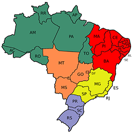

- Acre - 830.026 pessoas (2022)
- Alagoas - 3.127.511 pessoas (2022)
- Amapá - 733.508 pessoas (2022)
- Amazonas - 3.941.175 pessoas (2022)
- Bahia - 14.136.417 pessoas (2022)
- Ceará - 8.791.688 pessoas (2022)
- Distrito Federal - 2.817.068 pessoas (2022)
- Espírito Santo - 203.062.512 pessoas (2022)
- Goiás - 7.055.228 pessoas (2022)
- Maranhão - 6.775.152 pessoas (2022)
- Mato Grosso - 3.658.813 pessoas (2022)
- Mato Grosso do Sul - 2.756.700 pessoas (2022)
- Minas Gerais - 20.538.718 pessoas (2022)
- Pará - 8.116.132 pessoas (2022)
- Paraíba - 3.974.495 pessoas (2022)
- Paraná - 11.443.208 pessoas (2022)
- Pernambuco - 9.058.155 pessoas (2022)
- Piauí - 3.269.200 pessoas (2022)
- Rio de Janeiro - 16.054.524 pessoas (2022)
- Rio Grande do Norte - 3.302.406 pessoas (2022)
- Rio Grande do Sul - 10.880.506 pessoas (2022)
- Rondônia - 1.581.016 pessoas (2022)
- Roraima - 636.303 pessoas (2022)
- Santa Catarina - 7.609.601 pessoas (2022)
- São Paulo - 44.420.459 pessoas (2022)
- Sergipe - 2.209.558 pessoas (2022)
- Tocantins - 1.511.459 pessoas (2022)
| Estado |
Região |
População Residente |
| São Paulo |
Sudeste |
44.420.459 pessoas |
| Minas Gerais |
Sudeste |
20.538.718 pessoas |
| Rio de Janeiro |
Sudeste |
16.054.524 pessoas |
| Bahia |
Nordeste |
14.136.417 pessoas |
| Paraná |
Sul |
11.443.208 pessoas |
- Itaú Unibanco
- Banco Bradesco
- Mercedes-Benz
- SAP
- Banco Santander
- Banco do Brasil
- JP Morgan Chase & Co.
- Sanofi
- Unimed
- P&G
Link de referência - Wikipédia
Link de referência - IBGE
Link de referência - 10 empresas para se trabalhar no Brasil